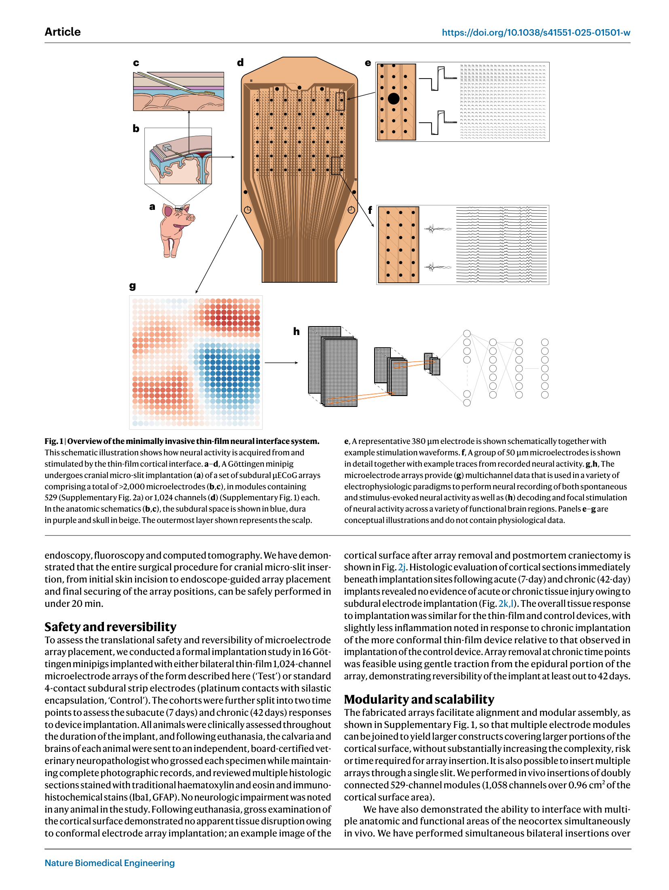
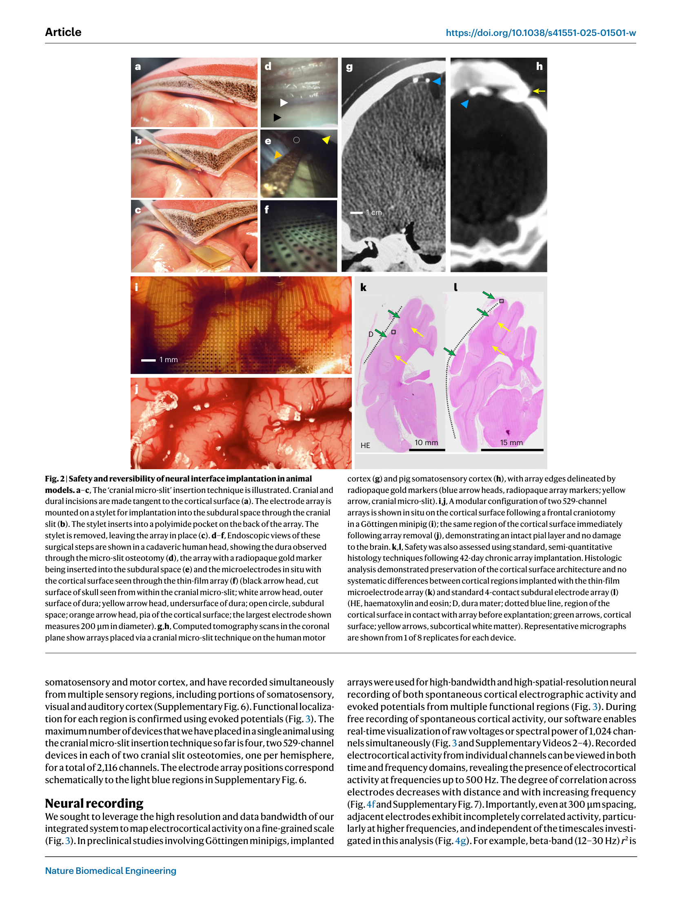
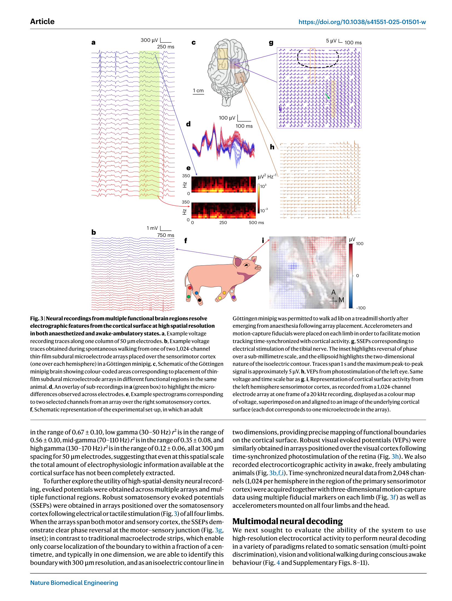
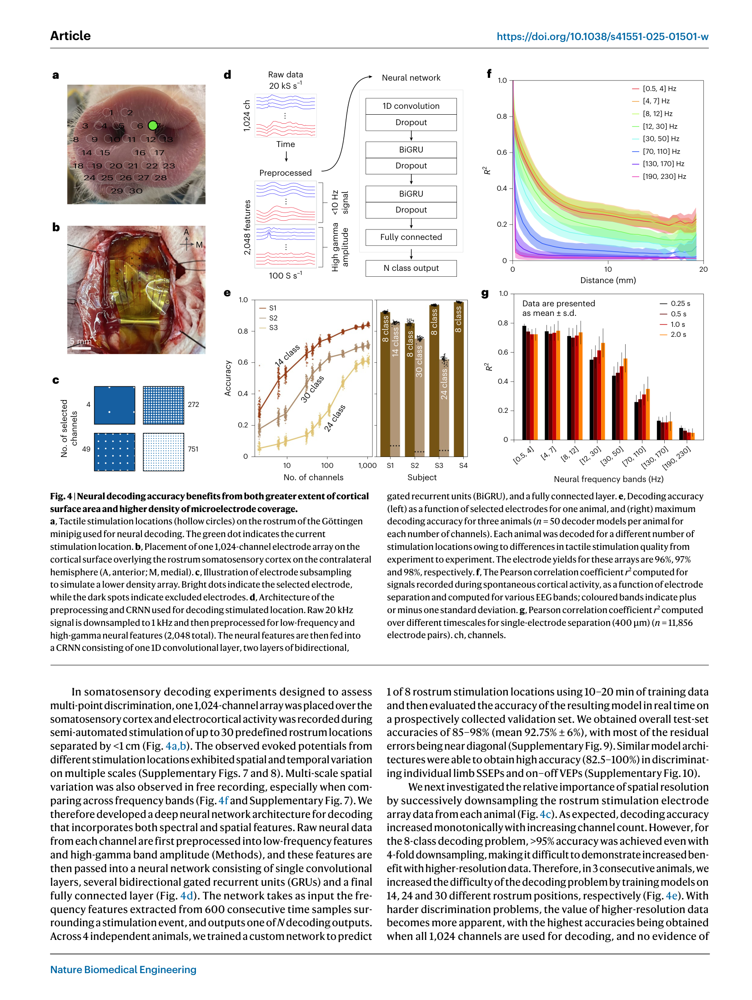
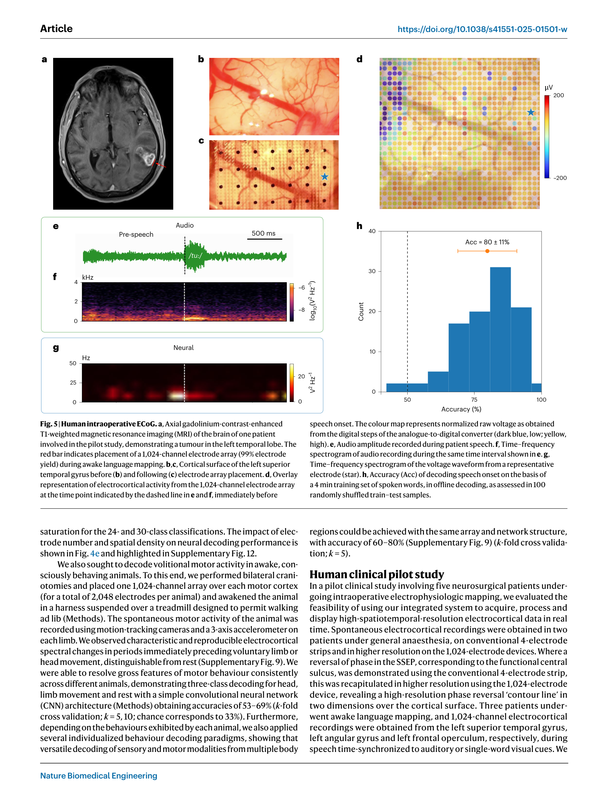
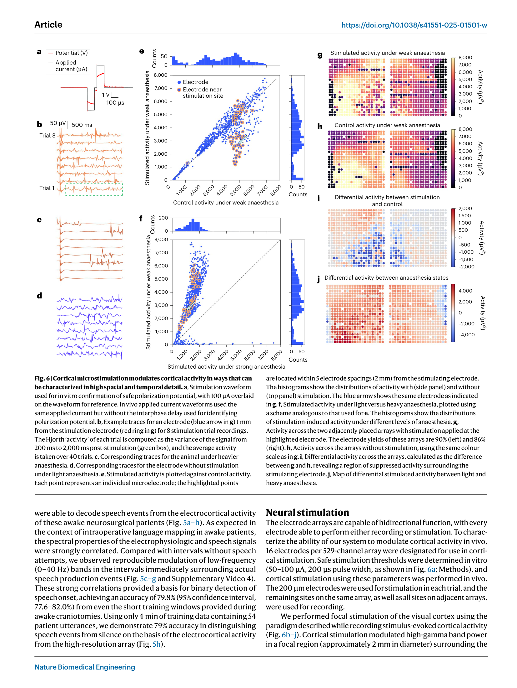

论文精读说明文档
微创植入可扩展高密度皮层微电极阵列
Precision Neuroscience 公司的 Layer 7 Cortical Interface：1,024 通道薄膜微电极阵列，颅骨微缝微创植入，在猪和人类患者中验证多模态神经记录、解码与刺激。
论文信息
Nature Biomedical Engineering - 2025 - Hettick - Minimally invasive implantation of scalable high-density cortical microelectrode arrays.pdf
一句话定位
这篇文章证明了：不开颅、不穿透脑组织，仅通过颅骨上一道几百微米宽的微缝，就可以把 1,024 通道柔性薄膜微电极阵列滑入硬膜下空间，20 分钟内完成植入，实现亚毫米分辨率的皮层表面神经记录、多模态解码和局灶刺激——这一套系统已在猪模型（42 天慢性植入）和 5 名清醒/全麻人类患者中验证，是目前规模最大的非穿透性高密度皮层接口公开报道。
为什么值得读
1. 高密度电极阵列工程的天花板案例
1,024 通道、50 μm 电极直径、400 μm 间距、工艺良率 >91%——这是目前公开文献中规模最大的非穿透性皮层微电极阵列。它把"高密度电极怎么设计、制造、表征"这一系列工程问题的答案摆在了桌面上：电极面积与阻抗的权衡、走线电阻、模块化拼接扩展到 2,116 通道的实现路径，都是电生理电极工程的第一手参考材料。
2. 微创植入的完整工程闭环
现有高通道数脑机接口（脑机接口，brain-computer interface，BCI）要么需要开颅手术（创伤大、感染风险高），要么依赖穿透性电极（组织损伤随电极数量线性增长，难以取出）。Hettick 的"颅骨微缝"（cranial micro-slit）方案绕开了这两个约束：从外科手术设计、内窥镜引导、CT 位置确认到 42 天后无损取出，是一套已经过 GLP（药物临床前研究质量管理规范，Good Laboratory Practice）级动物实验验证的工程闭环。
3. 对差分测量和刺激伪迹研究的直接参考价值
论文在皮层刺激实验中回避了刺激期间的伪迹分析窗口（只分析刺激后 200–2000 ms）。这正是你的差分测量方法所要突破的瓶颈——如果伪迹能被压制，分析窗口就可以前移到刺激期间，获得更丰富的信息。此外，他们报告的电极阻抗数据和皮层表面信号空间相关性数据，与你的等效电路建模有直接对照价值。
术语先说明
- 微丝（microwire）：最早期的穿透性电极，通道数少，可柔性；
- Utah 阵列（Utah array）：96 通道硅针阵列，单神经元记录；需开颅并刺入皮层，组织损伤明确；
- Neuropixels：高密度硅探针，可同时记录数百个单神经元，科研常用，不适合长期临床植入；
- μECoG（micro-electrocorticography，微型皮层电图）：本文方案，非穿透性薄膜电极铺在皮层表面，记录局部场电位（LFP）和高伽马功率，不记录单个神经元动作电位。
图文导读






主流方案横向对照
下表对比当前最受关注的几类皮层神经记录/BCI 植入方案，帮助定位 Precision Neuroscience 技术路线的优势与代价。
| 参数 | Precision Neuroscience Layer 7（本文） |
Neuralink N1 | Utah 阵列 | Neuropixels |
|---|---|---|---|---|
| 电极类型 | 非穿透性薄膜 μECoG（皮层表面） | 穿透性柔性线程（穿入皮层） | 穿透性硅针阵列（穿入皮层） | 穿透性硅探针（穿入皮层/皮层下） |
| 通道数 | 1,024–2,116（可模块扩展） | 1,024（64 线程 × 16 电极） | 96–128 | 960（单探针） |
| 电极间距 | 300–400 μm（表面） | ~50 μm（皮层内） | 400 μm（4×4 mm²） | 25 μm（垂直分布） |
| 信号类型 | LFP + 高伽马功率（偶有近似 SUA） | 单神经元 AP + LFP | 单神经元 AP + LFP | 单神经元 AP（数百至数千） |
| 手术方式 | 颅骨微缝（约 20 分钟，无开颅） | 机器人穿刺植入（开颅） | 气动植入枪（开颅） | 手动/立体定位（开颅或钻孔） |
| 可逆性 | 已验证 42 天后无损取出 | 穿透性，取出有组织损伤风险 | 穿透性，取出困难 | 急性/亚慢性为主（科研工具） |
| FDA 状态 | 510(k) 许可（2025 年 4 月，临床术中使用） | IDE 批准（临床试验阶段） | FDA 许可（部分型号） | 无（科研工具，非临床器械） |
| 主要局限 | 无单神经元分辨率；目前有线（经皮）；长期信号稳定性数据有限 | 开颅；慢性组织反应；线程断裂风险 | 信噪比随慢性植入下降；通道数少 | 急性操作复杂；不适合长期慢性植入 |
和你的研究怎么接上
1. 电极-细胞耦合工程问题
Hettick 报告的电极阻抗数据（50 μm 记录电极约 800 kΩ @1 kHz，380 μm 刺激电极约 8 kΩ）与你在 patch-clamp 中处理的电极-细胞界面问题有共同的物理基础：双电层电容决定了低频信号的耦合效率，电荷转移电阻决定了直流和低频下的噪声水平。阻抗随面积的反比关系（~1/A）在他们的 20–380 μm 电极尺寸范围内得到了定量验证，这和你用等效电路描述 pipette-cell 界面的框架完全一致。具体对照：他们 50 μm 电极的 800 kΩ 阻抗对应约 30 pF 的界面电容（@1 kHz），而典型 patch-clamp pipette 的 pipette 电容（Cp）在 1–5 pF 量级——尺寸差异直接反映在界面电容上。
2. 高通道数下伪迹与共模抑制
论文的皮层刺激实验（Fig. 6）分析窗口刻意回避了刺激期间（只取刺激后 200–2000 ms），原因正是刺激伪迹污染了同期记录信号。这是 μECoG 和 patch-clamp 中共同存在的问题——差别只在于尺度。你的差分测量方案通过共模抑制压制 Ve 进入记录通道的成分；在 μECoG 场景中，对应方法是 Hjorth 参考（局部空间差分）或公共平均参考（CAR，common average reference）。你的方法原理上可以类比到 μECoG：如果参考电极和记录电极均受同一刺激伪迹影响（共模），则差分可以压制伪迹，把分析窗口从刺激后 200 ms 前移到刺激期间。这是本文技术路线的一个可以改进的空间，也是你的研究对该领域的潜在贡献点。
3. BCI 与差分测量的系统观联系
从空间分辨率来看，你的 patch-clamp 工作（单细胞，~1 μm）和 Hettick 的 μECoG（皮层表面，300–400 μm 间距）分处神经记录谱的两端。但两者解决的核心测量问题是同构的：如何区分"我真正想测的信号"和"测量系统本身引入的干扰"。你在单细胞层面建立的等效电路建模思路——将 Ve、Vm、刺激伪迹拆解为不同路径的叠加——在系统级 μECoG 数据分析中同样有方法论参考价值。Hettick 发现高伽马段 300 μm 处 r² 约 0.12 的空间相关性，也为理解体积导体（volume conductor）中 Ve 在亚毫米尺度的真实分布提供了实验校准数据——这比纯理论的点电流源模型更贴近真实组织。
证据链和局限
- 无慢性无线数据。目前系统为有线（经皮连接），需要经皮导线穿出皮肤。慢性植入的无线版本尚未在论文中展示。这是临床应用的关键工程瓶颈，也是长期安全性数据的缺口。
- 解码性能是有限范式下的结果。体感辨别在麻醉猪的被动刺激实验中达到 85–98%（8–30 类），运动解码在自由行走猪中只有 53–69%（3 类，机会水平 33%）。与 BrainGate（Utah 阵列，穿透性）在瘫痪患者中展示的精细运动控制相比，性能差距显著，但任务难度也不同，不能直接比较。
- 刺激功能初步。只展示了单电极刺激在视觉皮层的局灶功率调制，没有展示功能性感觉反馈、闭环控制或多电极图案刺激。
- 长期电生理稳定性数据缺失。42 天时间点只有组织学数据，没有长期信号质量（阻抗随时间变化、SNR 漂移）的定量跟踪。ECoG 的一大优势本应是长期信号稳定性，但论文未展示。
- μECoG vs 穿透性电极的直接性能比较缺失。论文多次暗示 μECoG 信息量被低估，但没有同场景下与 Utah 阵列或 Neuropixels 的头对头解码性能比较。
- 商业背景带来选择性报告风险。Precision Neuroscience 是商业公司，论文发表与 FDA 510(k) 许可时间高度重合，存在选择性突出正面结果的潜在动机。
建议阅读顺序
- 先读 Abstract 和 Introduction 最后两段——快速定位作者声称解决的问题是什么，以及他们和 Neuralink / Utah 阵列的技术路线区别在哪里。
- 看 Fig. 1 和补充材料中的电极表征数据——理解阻抗 vs 面积关系、走线电阻、制造良率。这是工程参数的核心，和你的等效电路工作直接相关。
- 重点读 Fig. 2 和 Methods 中的植入手术章节——颅骨微缝的步骤、内窥镜操作、CT 确认、可逆性验证，是本文最有独创性的工程贡献。
- 读 Fig. 3 的空间相关性分析——高伽马段 r² ~0.12 的数据最具理论价值，直接告诉你皮层表面信号的空间异质性比你想象的高。
- 读 Fig. 6 刺激实验，重点看方法中如何处理伪迹——分析窗口的选择（排除刺激期间）和麻醉对照实验的设计，对你理解刺激伪迹问题的现状很有参考价值。
- 最后看 Fig. 4 解码性能曲线——通道数 vs 准确率的关系，评估时注意区分任务难度和系统成熟度。
来源链接
- DOI: 10.1038/s41551-025-01501-w（Springer Nature 官方 DOI 页）
- Nature Biomedical Engineering 论文页
- PubMed: PMID 41039113
- Precision Neuroscience 官方网站（precisionneuro.io）
- GitHub 数据与代码仓库（论文引用；请验证可访问性） — 未独立验证，以论文标注为准
- 同期配套 News & Views 评论文章（High-resolution brain–computer interface with electrode scalability and minimally invasive surgery，Nature BME 2025）
- bioRxiv 预印本（Layer 7 Cortical Interface 早期版本）